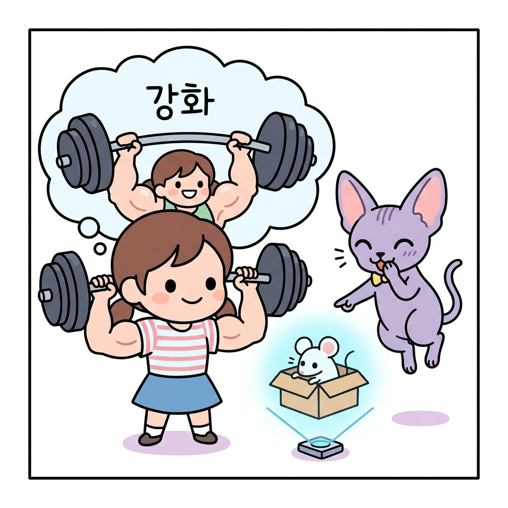
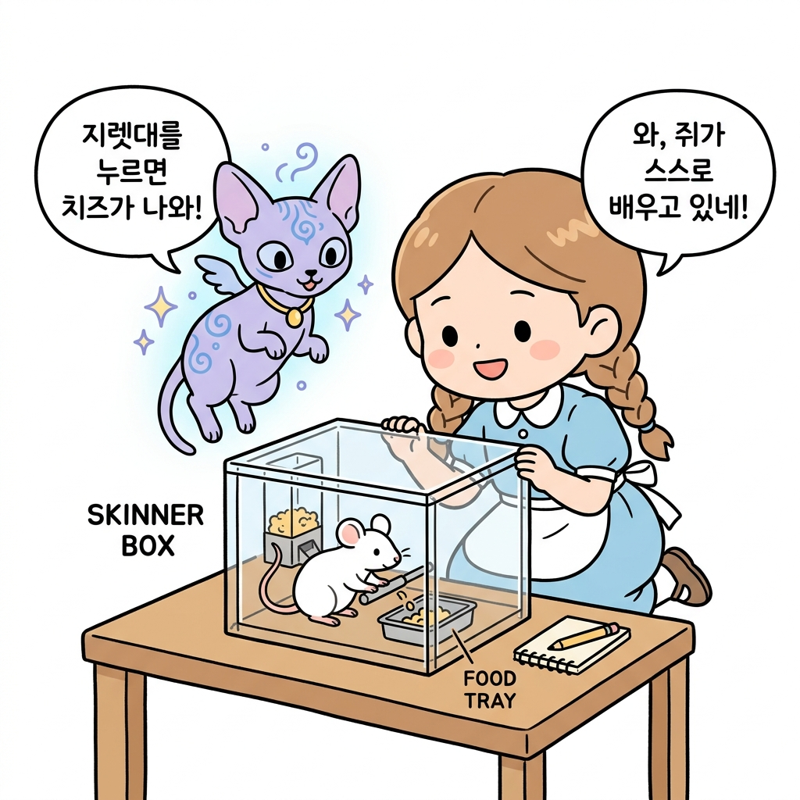
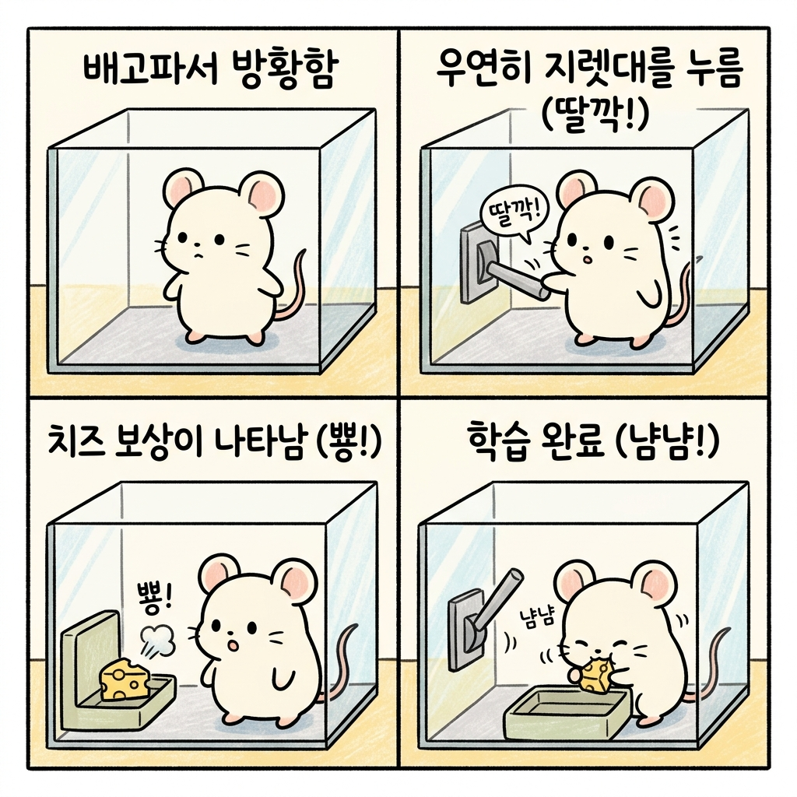
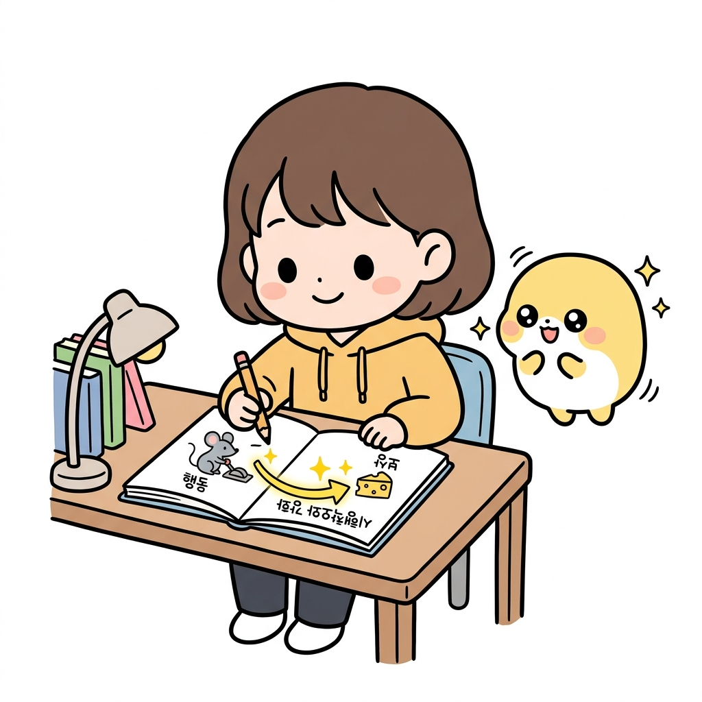
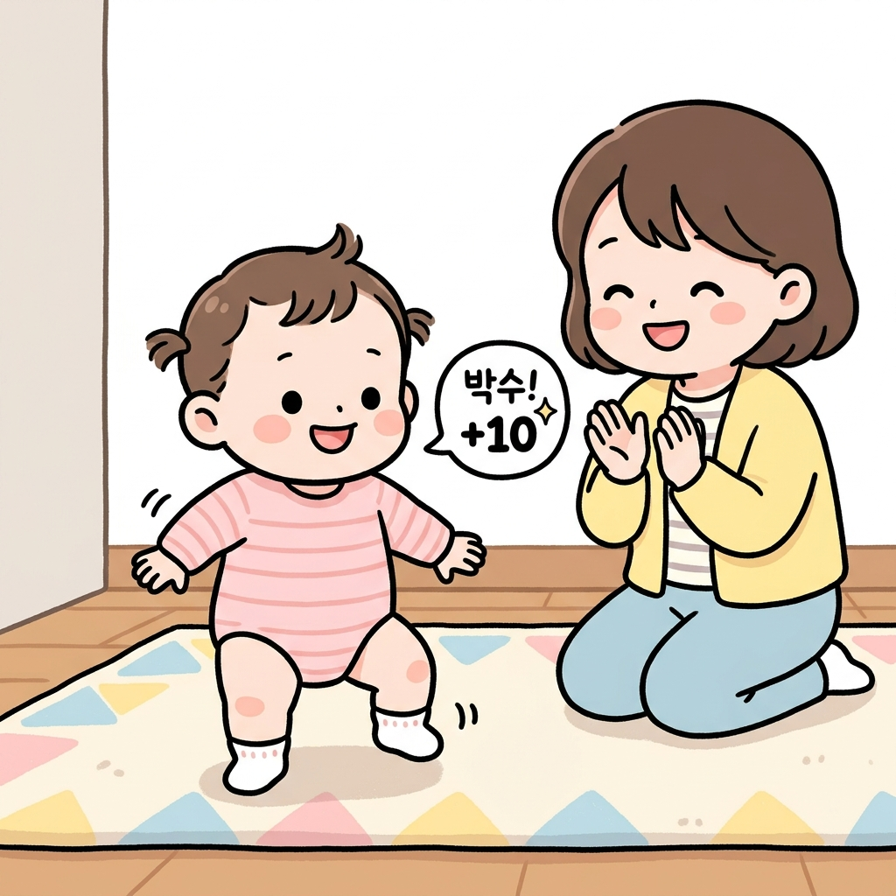
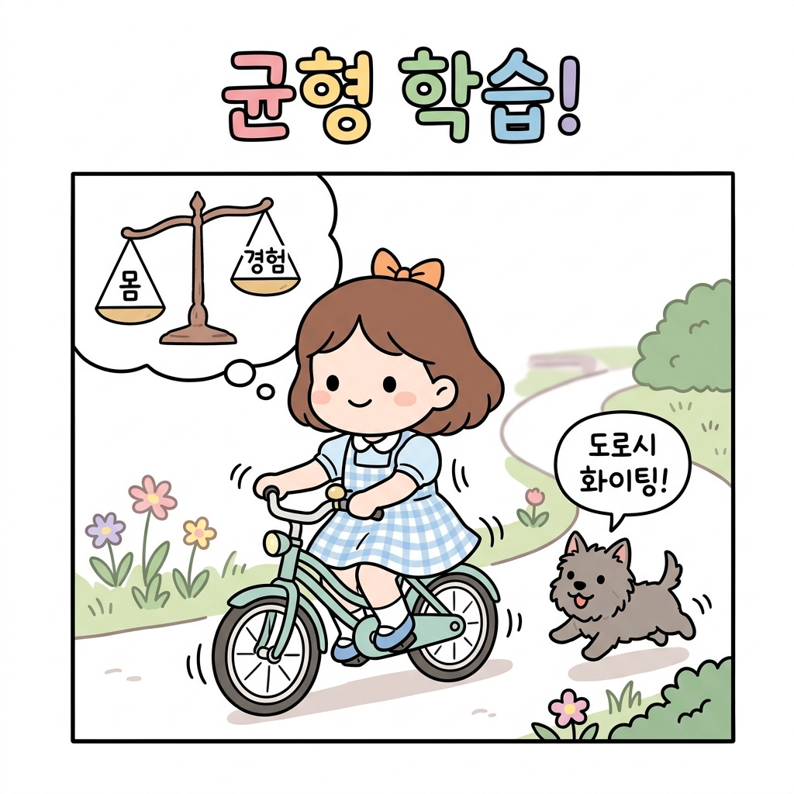

01.3 스키너의 쥐 실험과 일상의 강화
조작적 조건화Operative Conditioning는 동물이 어떤 행동을 취했을 때 보상이나 벌을 제공함으로써 그 행동을 반복하게 만들거나 억제하는 심리학 기법입니다. 강화학습의 ‘강화’라는 명칭은 행동 뒤에 따르는 피드백을 통해 행동의 빈도를 조절하는 행동심리학의 이 개념에서 유래했습니다.
“도로시, 강화학습의 ‘강화’라는 단어는 원래 어디서 왔는지 아니?”
지니가 푸른 연기를 헤치며 손가락으로 공중에 입체 홀로그램 상자를 띄웠습니다. 상자 안에는 귀여운 하얀 쥐 한 마리가 바쁘게 냄새를 맡으며 돌아다니고 있었습니다.
“음, 왠지 몸을 단단하게 단련하는 체력 훈련 같은 단어인걸?”

그림 1-3-a 체력 단련(근육 강화)을 연상하며 오해하는 도로시와 쥐 실험 홀로그램을 띄우는 지니도로시가 고개를 갸웃거리자, 옆에서 지니가 빙그레 웃었습니다.
“후훗, 아니란다! 이건 20세기 조작적 조건화 연구로 유명한 행동심리학자 스키너B. F. Skinner 박사의 실험 상자를 본뜬 홀로그램이야. 강화학습의 진짜 뿌리는 바로 이 행동심리학의 연구에 있단다.”

그림 1-3-b-1 지니와 도로시가 신비한 투명 상자 속에서 지렛대를 누르며 노는 쥐를 관찰하는 모습01.3.1 스키너의 상자 실험 (Skinner Box)
지니는 홀로그램 상자 속의 쥐가 어떻게 행동하는지 보여주며 설명을 이어갔습니다.
- 상자 안의 굶주린 쥐: 상자 안에는 작은 지렛대(Lever)와 먹이 디스펜서(Dispenser)가 있습니다. 처음 들어온 쥐는 몹시 배가 고파 상자 안을 무작위로 돌아다닙니다.
- 우연한 발견: 돌아다닌 쥐가 우연히 지렛대를 발로 누릅니다.
- 보상의 획득: 딸깍! 소리와 함께 먹이 통에서 맛있는 치즈 알갱이(보상)가 하나 떨어집니다.
- 반복과 깨달음: 처음에는 지렛대와 먹이의 연관성을 몰라 다시 방황하지만, 우연히 두 번, 세 번 누르면서 결국 “지렛대를 누르면 먹이가 나온다”는 사실을 스스로 학습하게 됩니다.
- 행동의 강화: 이제 쥐는 배가 고플 때마다 다른 행동을 하지 않고 지렛대로 바로 직행하여 지렛대를 쉴 새 없이 누르게 됩니다.

그림 1-3-b-2 배고픈 쥐가 무작위로 탐색하다가 지렛대를 누르고 보상(치즈)을 얻는 4단계 시행착오 학습 과정“와! 쥐가 누구한테 배우지도 않았는데 스스로 맛있는 걸 얻는 규칙을 알아낸 거네?”
“그렇지! 심리학에서는 이를 ‘시행착오Trial and Error 학습’이라고 부르고, 특정 행동을 했을 때 좋은 결과(먹이)가 따라와서 그 행동의 빈도가 늘어나는 현상을 ‘강화Reinforcement‘라고 정의했단다.
쥐는 기계의 내부 구조를 이해하지는 못하지만, 자신의 ‘행동’과 ‘결과(보상)’를 강력하게 연결하여 배우는 거지.”

그림 1-3-b-3 에이전트의 ‘행동’과 이에 따른 ‘보상’ 피드백을 수첩에 연결해 보며 시행착오와 강화를 이해하는 도로시01.3.2 우리 일상에서의 강화 사례
“생각해보니 우리도 이 쥐처럼 무언가를 배운 적이 있는 것 같아!”
도로시의 말에 토토가 꼬리를 세차게 흔들며 동의를 표현했습니다. 지니가 맞장구를 쳤습니다.
“빙고! 우리는 태어나서 지금까지 온통 이 ‘강화’를 통해 성장했단다.”
👶 아기의 걸음마
아기는 태어나서 걸음마를 배울 때 물리학 책을 읽거나 부모님의 특강을 듣지 않습니다.
- 다리에 힘을 주어 일어서 봅니다. (행동)
- 뒤뚱거리다가 엉덩방아를 찧습니다. (실패 피드백 / 벌점)
- 균형을 잡기 위해 상체를 꼿꼿이 세워 봅니다. (행동)
- 우연히 한 걸음을 딛게 되어 부모님의 뜨거운 박수를 받습니다. (성공 피드백 / 보상)
- 이 과정을 수백 번 반복하면서 몸의 균형을 유지하고 걷는 법을 몸으로 깨우치게(강화) 됩니다.

그림 1-3-c 부모님의 박수 보상을 받으며 걸음마를 배우는 아기의 시행착오 학습🚲 자전거 타기
자전거를 처음 배울 때를 기억해 보세요.
- “이 자전거는 무게가 15kg이고 바퀴 마찰계수가 이정도니, 나는 핸들을 오른쪽으로 12도 꺾으면서 몸의 무게중심을 왼쪽으로 5cm 옮겨야지”라고 계산하며 타는 사람은 아무도 없습니다.
- 그냥 안장 위에 올라타 페달을 밟아보고, 휘청거리며 넘어질 뻔하는 아슬아슬한 경험과 무사히 앞으로 나아가는 시원함을 온몸으로 겪어(시행착오) 나가며, 균형을 잡는 근육의 미세한 움직임을 스스로 체득합니다.

그림 1-3-d 부딪히고 넘어지는 위험 속에서도 균형 중심을 직접 겪으며 자전거 학습(강화)을 터득하는 도로시“아하! 지니가 내게 가르쳐줄 강화학습이라는 것도, 바로 컴퓨터에게 이런 아기나 자전거를 타는 사람처럼 직접 온몸으로 겪어보고 똑똑해지는 마법을 가르쳐주는 거구나?”
“맞아! 정답지가 적힌 책을 주지 않아도 스스로 부딪치며 배울 수 있는 이 놀라운 능력을 컴퓨터에게 선물하는 것, 그것이 바로 강화학습이란다!”
🌟 정리하자면!
강화학습은 행동주의 심리학의 조작적 조건화(시행착오 학습)에 그 이론적 뿌리를 두고 있으며, 주어진 정답 데이터 없이 에이전트가 직접 환경과 상호작용하며 겪은 행동과 보상(피드백)을 결합하여 스스로 최적의 정책을 찾아가는 자율 학습 시스템입니다.